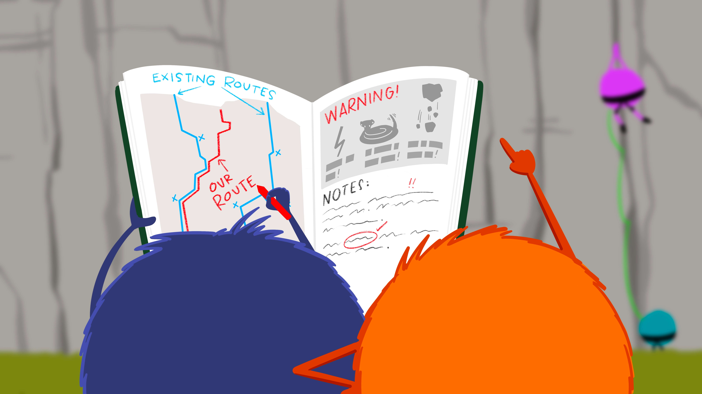
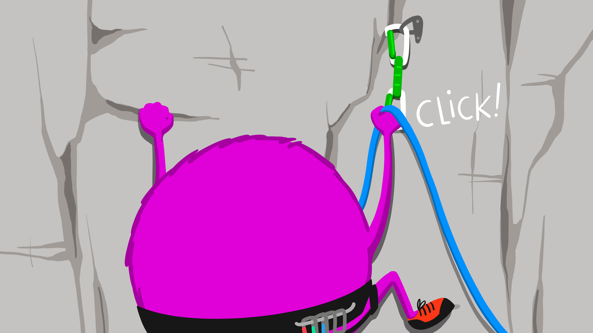
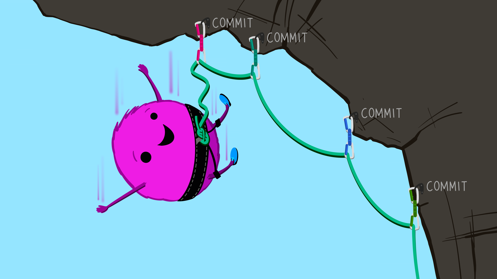
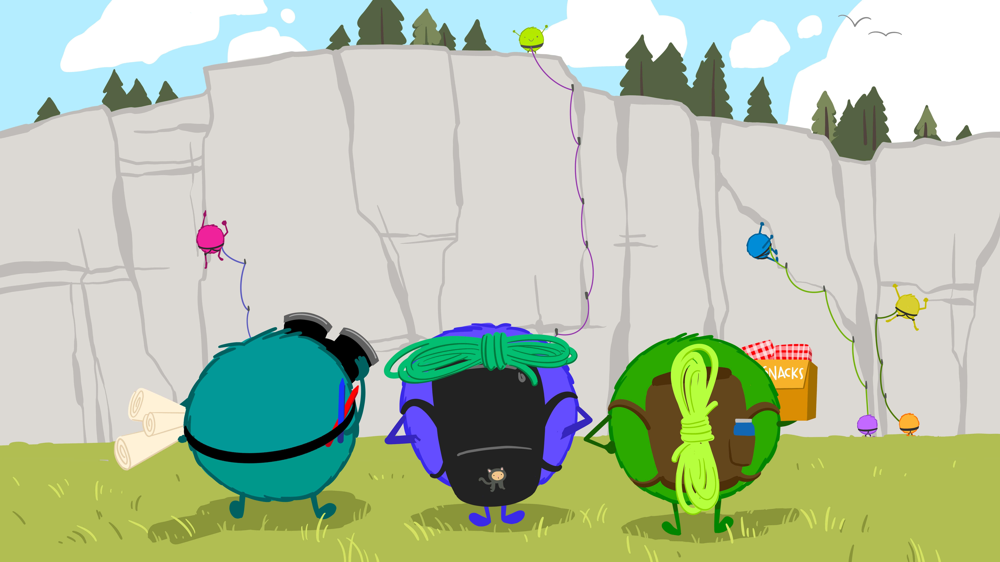

![A row of 6 cute smiling monsters celebrating using GitHub. The first, wearing a climbing harness labeled 'Me' is high-fiving another whose harness says 'Future Me'. Others hold a box of snacks that are tacos, a map, and a rope. Text above the monsters quotes Jenny Bryan: 'Collaboration is the most compelling reason to manage a project with Git and GitHub. My definition of collaboration includes hands-on participation by multiple people, including your past and future self, as well as an asymmetric model, in which some people are active makers and others only read or review.'](../../img/blog/github-illustrated-series/github_friends.png)
Welcome! This illustrated series tells a story about why GitHub is so powerful for supporting, reusing, contributing, and failing safely. It is here as a blog post and also as slides to be most flexible for teaching. This complements the Tidy Data Illustrated Series and is a collaboration around open science, coding, teaching, and art.
Please reuse & remix with your own communities:
Download from https://github.com/allisonhorst/stats-illustrations
Reuse/remix from this slide deck
View/share this twitter thread
GitHub for supporting, reusing, contributing, and failing safely
When we talk about managing projects to help us contribute, reuse, collaborate, and fail safely, we are talking about GitHub1. We mean using modern collaborative software designed to organize otherwise unwieldy interrelated files and to track changes by potentially different people through time – something that is for everyone, whether or not we identify as “coders”. People do use GitHub for code- and data-intensive projects, but we are not limited to that use. GitHub is a powerful approach for any project that we want to organize and communicate about; it’s a way we can be open with ourselves and our teams, and also work more publicly as we feel comfortable.
So let’s talk about why GitHub is so empowering for our project-oriented and collaborative lives.
Why GitHub?
Bryan J. 2017. Excuse me, do you have a moment to talk about version control? PeerJ Preprints 5:e3159v2 https://doi.org/10.7287/peerj.preprints.3159v2
The concepts, mechanics, and vocabulary of GitHub (and underlying software Git) are new and unfamiliar when we get started or learn more about its capabilities. Hadley Wickham and Jenny Bryan use the analogy of climbing to describe how GitHub can keep us safe while also showing our journey.

Wickham & Bryan, R Packages https://r-pkgs.org/preface.html
GitHub helps streamline our work
GitHub helps streamline our work because it takes care of otherwise time-consuming bookkeeping and unrelenting file tracking. Instead of spending our time inspecting and fretting over whether “analysis_final_v2.xls” or “analysis_final_final.xls” is truly the final version, with GitHub we can be confident in our completed analysis and move to the next step.
![In the left panel, against a blue sky with white clouds, a confident-looking monster climbs a rock face. Their rope’s anchors, secured with carabiners, are labeled from bottom to top and say 'Initial commit', 'Data Cleaned', 'Analysis completed'. Another anchor on their harness is ready to place and is labeled 'Manuscript drafted'. In the right panel, against a gray sky with rain and lightning, an unhappy stressed-looking monster climbs a rock face. Their rope has a knot, is frayed, and is looped around one foot. Their anchors, placed haphazardly and not well-secured, are labeled things like 'analysis_final_v2.xls', 'analysis_final_final.xls', and 'ignore_this.xls'. Text above the left panel says: 'When working with GitHub we can navigate with more obvious, safe, streamlined routes that let us focus on the science-y things we want to do…' Text above the right panel says '...but working without GitHub can be disorienting, with too much time spent sifting through past work to figure out next steps forward.'](../../img/blog/github-illustrated-series/github_compare_text.png)
GitHub helps us support
GitHub helps us support others and existing work. Whether we are organizing, improving documentation, or asking and answering questions, GitHub helps us provide support to our collaborators on projects, whether we are writing code or not.

GitHub helps us reuse
GitHub helps us reuse existing work, which lets us learn and build from other people’s shared experience rather than reinventing on our own. Plus, the existing work gets better each time someone tries it and shares their experience back. Whether it’s code, documentation, or knowledge through posted conversations, reusing existing things can save time, resources, and frustration. Importantly, reuse also expands the value of existing work while celebrating the contributions of others.

GitHub helps us contribute
GitHub helps us contribute ideas through code, text, and more, with less worry about file management. This helps us feel more confident to share work-in-progress and contribute to existing work, knowing that we won’t break things. It also helps us share work earlier that might be imperfect, since we can still make changes from there.

GitHub helps us fail safely
GitHub helps us fail safely. Because we can return to previous versions easily, painful consequences of failing are reduced. We can more bravely try things and start making contributions, knowing that some (many?) will fail - but won’t be catastrophic! When we fail, we’ll be able to start again from where we left off (instead of from the ground), and a clear history can help us learn from the past.

Harness the power of GitHub
Once we are empowered to work collaboratively with GitHub, it opens up a whole new world of projects that feel more welcoming because we can contribute in many different ways, using familiar approaches, and evolving with new possibilities as they emerge. This transferrable ability to collaborate and develop confidence for trying new things might just be the best thing about GitHub.

GitHub for the win!
GitHub enables new frontiers for open science as we collaborate, share, and publish more easily. And, it is critical to continually question who is safe to participate with these tools. Who is not yet participating, and why? Barriers to access include past exclusion, skills, and support. Let’s all work empathetically and inclusively to help make more people feel welcome and safe using these powerful tools so we can all go further, together.

Learn more about GitHub
These are our go-to resources about GitHub; they include philosophy and step-by-step guidance. These examples are with R and RStudio, and are applicable more broadly.
“Excuse Me, Do You Have a Moment to Talk About Version Control?” Bryan J, 2017, PeerJ
Happy Git With R. Bryan J.
R for Excel Users. Lowndes J and Horst A, 2020. Chapter 4 and 8 focus on starting setup and collaboration with GitHub and RStudio
R Packages. Wickham H and Bryan J. Chapter 18 focuses on Git/GitHub.
usethis. Wickham H and Bryan J. usethis is a workflow package: it automates repetitive tasks that arise during project setup and development, both for R packages and non-package projects.
GitHub for Publishing. Openscapes Team. Openscapes Champions Lesson Series
Many thanks to Erin Robinson, Tara Robertson, Stefanie Butland, Hadley Wickham, and Jenny Bryan, for reviewing this blog, and for teaching and inspiring us always.
Footnotes
From Bryan 2017: “we’re targeting GitHub - not Bitbucket or GitLab - for the sake of specificity. However, all the big-picture principles and even some mechanics will carry over to these alternative hosting platforms. We are advocating for the use of hosted version control as a general concept, with GitHub being the best and most common provider today.”
↩︎